<!DOCTYPE html>
<html lang="en">
<head>
<meta charset="UTF-8">
<meta name="viewport" content="width=device-width,initial-scale=1">
<title>8.4 An Exploration in Rectangles — Playing with Constructions</title>
<meta name="description" content="Class 6 Mathematics · Playing with Constructions · 8.4 An Exploration in Rectangles">
<link rel="icon" href="data:image/svg+xml,<svg xmlns='http://www.w3.org/2000/svg' viewBox='0 0 100 100'><text y='.9em' font-size='90'>📘</text></svg>">
<link rel="stylesheet" href="../../../assets/book.css">
<link rel="stylesheet" href="https://cdn.jsdelivr.net/npm/katex@0.16.11/dist/katex.min.css" crossorigin="anonymous">
</head>
<body>
<header class="topbar">
<div class="topbar-in">
  <div class="crumb">
    <span class="c1"><a href="../../../index.html">Library</a> · <a href="../../index.html">Class 6 Mathematics</a></span>
    <span class="c2">Playing with Constructions · 8.4 An Exploration in Rectangles</span>
  </div>
  <a class="tb-btn" data-nav="prev" href="../../08-playing-with-constructions/05-constructing-squares-and-rectangles-8.3/index.html" title="8.3 Constructing Squares and Rectangles">←</a>
  <details class="drawer"><summary class="tb-btn" title="Sections in this chapter">☰</summary>
<div class="drawer-panel"><div class="dh">Playing with Constructions</div><a href="../01-artwork-8.1/index.html">8.1 Artwork</a><a href="../02-figure-it-out/index.html">Figure it Out</a><a href="../03-squares-and-rectangles-8.2/index.html">8.2 Squares and Rectangles</a><a href="../04-figure-it-out/index.html">Figure it Out</a><a href="../05-constructing-squares-and-rectangles-8.3/index.html">8.3 Constructing Squares and Rectangles</a><a href="../06-an-exploration-in-rectangles-8.4/index.html" aria-current="page">8.4 An Exploration in Rectangles</a><a href="../07-exploring-diagonals-of-rectangles-and-squares-8.5/index.html">8.5 Exploring Diagonals of Rectangles and Squares</a><a href="../08-summary/index.html">Summary</a><a href="../09-solutions/index.html">CHAPTER 8 — SOLUTIONS</a></div></details>
  <a class="tb-btn" data-nav="next" href="../../08-playing-with-constructions/07-exploring-diagonals-of-rectangles-and-squares-8.5/index.html" title="8.5 Exploring Diagonals of Rectangles and Squares">→</a>
  <button class="tb-btn" data-theme-toggle title="Toggle light / dark" aria-label="Toggle light or dark theme">◐</button>
</div>
<div class="progress"><span style="width:70.6%"></span></div>
</header>
<main class="wrap">
<div class="sec-head">
  <p class="eyebrow"><a href="../index.html">Chapter 8 · Playing with Constructions</a></p>
  <h1>8.4 An Exploration in Rectangles</h1>
  <p class="sec-meta">Textbook pages 11–17 · 15 figures</p>
</div>
<article class="prose">
<p>Construct a rectangle ABCD with \(AB = 7\) cm and \(BC = 4\) cm. Imagine X to be a point that can be moved anywhere along the side AD. Similarly, imagine Y to be a point that can be moved anywhere along the side BC. Note that X can also be placed on the end point A or D. Similarly, Y can also be placed on the end point B or C.</p>
<figure class="fig wide">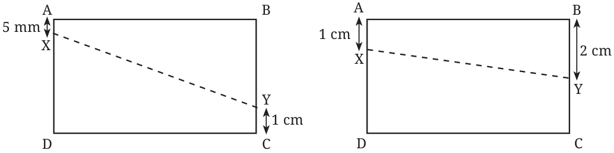</figure>
<p>\(B = Y B = Y\)</p>
<figure class="fig">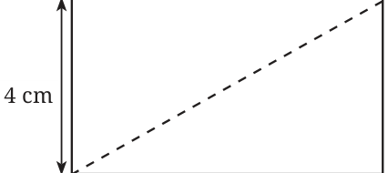</figure>
<figure class="fig">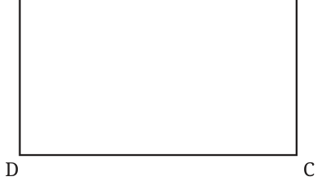</figure>
<p>\(D = X\)</p>
<p>At which positions will the points X and Y be at their closest? When do you think they will be the farthest? What does your intuition say? Discuss with your classmates. Now, verify your guesses by placing the points X and Y on the sides and measure how near or far they are. The distance between X and Y can be obtained by measuring the length of the line XY. How does the minimum distance between the points X and Y compare to the length of AB? Change the positions of X and Y to check if there are other positions where they are at their nearest or farthest. You could construct multiple copies of the rectangle and try out various positions of X and Y. How will you keep track of the lengths XY for different positions of X and Y? Here is one way of doing it. Suppose here are some of the positions of X and Y that you have considered:</p>
<figure class="fig side-fig"></figure>
<ol>
<li>When X is 5 mm away from A and Y is 3 cm away from B, \(XY =\) ___ cm __ mm</li>

<li>When X is 1 cm away from A and Y is 1 cm away from B, \(XY =\) ___ cm ___ mm</li>

<li>When X is 2 cm away from A and Y is 4 cm away from B, \(XY =\) ___ cm ___ mm and so on. Is there a shorthand way of writing it down? In all the sentences, only the position of X, Y and the length XY changes. So we could write this as:</li>
</ol>
<figure class="fig table-fig wide">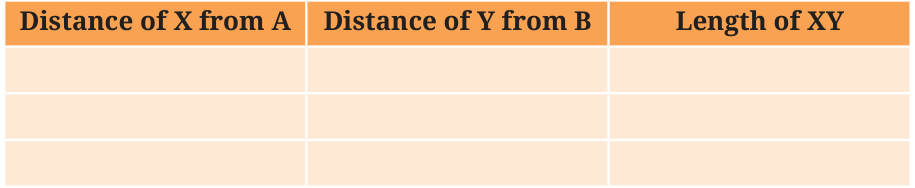</figure>
<p>Have you checked what happens to the length XY when X and Y are placed at the same distance away from A and B, respectively? For example, as in the cases like these:</p>
<figure class="fig table-fig wide">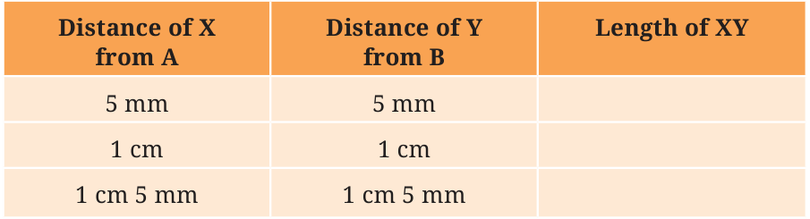</figure>
<p>and so on.</p>
<p>In each of these cases, observe</p>
<ol>
<li>how the length XY compares to that of AB and</li>
<li>the shape of the 4-sided figure ABYX.</li>
</ol>
<p>How does the farthest distance between X and Y compare with the length of AC? BD?</p>
<p>Construct Breaking Rectangles</p>
<figure class="fig"></figure>
<p>Construct a rectangle that can be divided into 3 identical squares as shown in the figure.</p>
<h4 class="callout-h" id="s-solution">Solution</h4>
<p>If this seem difficult, let us simplify the problem.</p>
<p>Explore What about constructing a rectangle that can be divided into two identical squares? Can you try it? It is wise to first plan and then construct. But how do we plan? Can you think of a way?</p>
<p>One way is to visualise the final figure by drawing a rough diagram of it.</p>
<figure class="fig table-fig">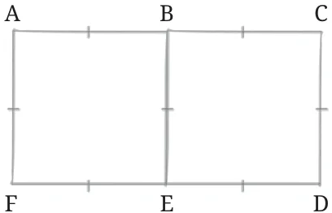</figure>
<p>What can we infer from this figure? Can you identify the equal sides? Since, the two squares are identical, \(AB = BC\) and \(FE = ED\) Since ABEF and BCDE are squares, all the sides in each of the squares are equal. This is written as \(- AF = AB = BE = FE BE = BC = CD = ED\) So, all the shorter lines are equal! A convention is followed to represent equal sides. It is done by putting a ‘|’ on the line. Refer to the rough figure. Using this analysis, can you try constructing it? Remember, all that was asked for is a rectangle that can be divided into two identical squares and with no measurements imposed. To draw the rectangle ACDF, one could assign any length to AF. For example, if we assign \(AF = 4\) cm, then what must the length of AC be?</p>
<p>Explore: Can the rectangle now be completed? In fact, one could proceed by drawing AF without even measuring its length using a ruler. We could then construct a line perpendicular to AF that is long enough to contain the other side. As, \(AB = AF\), we need to somehow transfer the length of AF</p>
<p>to get the point B. How do we do it without a ruler? Can it be done using a compass? Observe, how the length of AF is measured using a compass.</p>
<figure class="fig">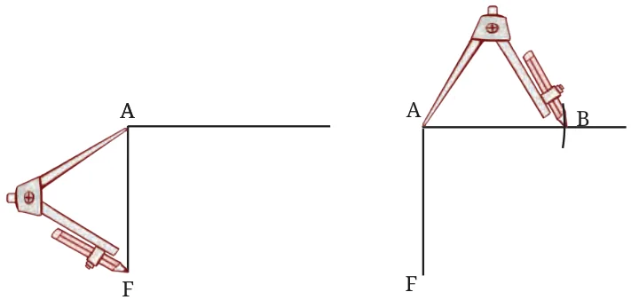</figure>
<p>Use it to mark out the points B and C, and complete the rectangle.</p>
<p>With this idea, try constructing a rectangle that can be divided into three identical squares.</p>
<p> Give the lengths of the sides of a rectangle that cannot be divided into -</p>
<ol>
<li>two identical squares;</li>
<li>three identical squares. Construct</li>

<li>A Square within a Rectangle</li>
</ol>
<p>Construct a rectangle of sides 8 cm and 4 cm. How will you construct a square inside, as shown in the figure, such that the centre of the square is the same as the centre of the rectangle?</p>
<figure class="fig">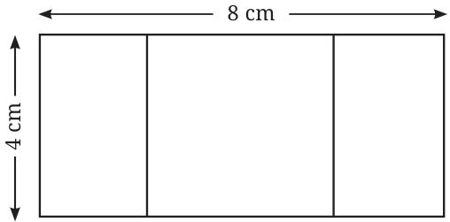</figure>
<p>Hint: Draw a rough figure. What will be the sidelength of the square? What will be the distance between the corners of the square and the outer rectangle?</p>
<ol>
<li>Falling Squares</li>
</ol>
<figure class="fig">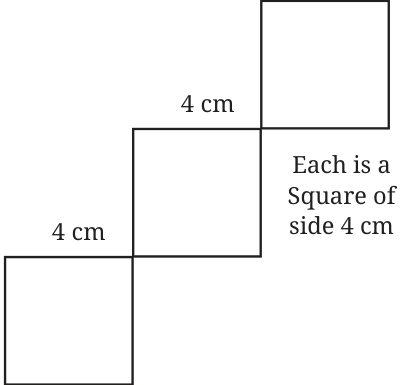</figure>
<div class="callout"><p>Make sure that the squares are aligned the way they are shown.</p></div>
<p>Now, try this.</p>

<figure class="fig">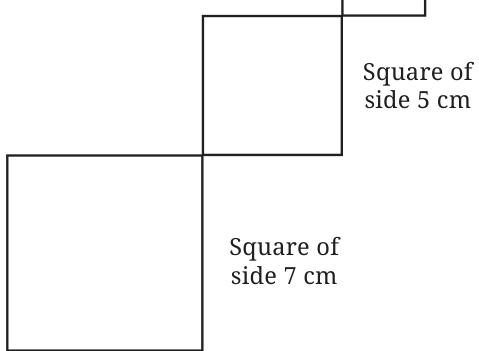</figure>
<figure class="fig side-fig">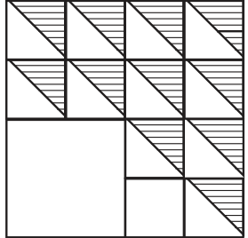</figure>
<ol>
<li>Shadings Construct this. Choose measurements of your choice. Note that the larger 4-sided figure is a square and so are the smaller ones.</li>

<li>Square with a Hole</li>
</ol>
<figure class="fig">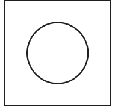</figure>
<div class="callout"><p>Observe that the circular hole is the same as the centre of the square.</p></div>
<p>Hint: Think where the centre of the circle should be.</p>
<ol>
<li>Square with more Holes</li>
<li>Square with Curves</li>
</ol>
<p>This is a square with 8 cm sidelengths. Try This Hint: Think where the tip of the compass can be placed to get all the 4 arcs to bulge uniformly from each of the sides. Try it out!</p>
</article>
<nav class="pager"><a class="" data-nav="prev" href="../../08-playing-with-constructions/05-constructing-squares-and-rectangles-8.3/index.html"><span class="dir">← Previous</span><span class="t">8.3 Constructing Squares and Rectangles</span><span class="ch">Playing with Constructions</span></a><a class="nx" data-nav="next" href="../../08-playing-with-constructions/07-exploring-diagonals-of-rectangles-and-squares-8.5/index.html"><span class="dir">Next →</span><span class="t">8.5 Exploring Diagonals of Rectangles and Squares</span><span class="ch">Playing with Constructions</span></a></nav>
</main><footer class="site">Generated from the source textbook PDFs · text, figures and exercises belong to their respective publishers.</footer><script defer src="https://cdn.jsdelivr.net/npm/katex@0.16.11/dist/katex.min.js" crossorigin="anonymous"></script>
<script defer src="https://cdn.jsdelivr.net/npm/katex@0.16.11/dist/contrib/auto-render.min.js" crossorigin="anonymous"
  onload="renderMathInElement(document.body,{delimiters:[
    {left:'\\(',right:'\\)',display:false},
    {left:'$$',right:'$$',display:true},
    {left:'\\[',right:'\\]',display:true}],throwOnError:false,ignoredTags:['script','noscript','style','textarea','pre','code']})"></script>
<script src="../../../assets/book.js"></script>
<script defer src="../../../../assets/search.js?v=1789782769"></script>
<script defer src="../../../../assets/screenshot.js?v=2"></script>
</body>
</html>
